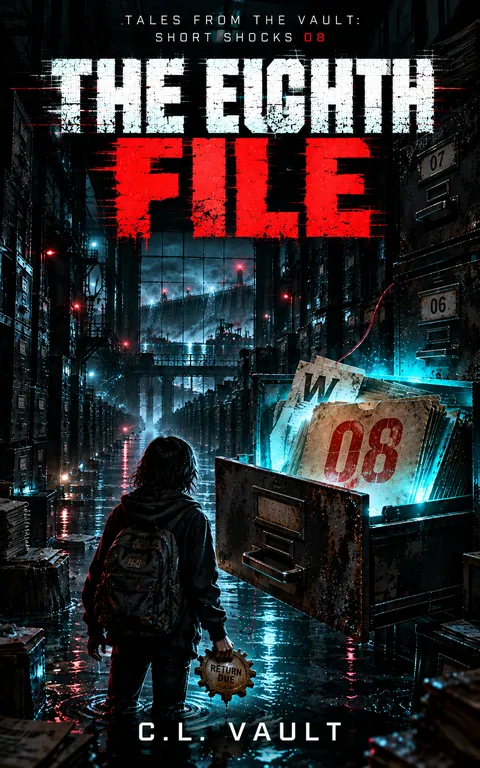

The Eighth File
Tales from the Vault: Short Shocks 8
Harbor City has decided that eight children are one problem. At 4:10, it intends to correct the error.
Kindle Unlimited reader? Membership eligibility for individual books is shown on Amazon. The format links above are paid affiliate links.
Purchase links open Amazon. Format availability is taken from the public catalog record.
What is on file
HARBOR CITY HAS DECIDED THAT EIGHT CHILDREN ARE ONE PROBLEM.
AT 4:10, IT INTENDS TO CORRECT THE ERROR.
Eleven-year-old Kit Avery notices things other people ignore.
A letter that moves after it's been printed.
A seventeen-toothed brass gear stamped RETURN DUE.
Read the complete filed description
A date that doesn't exist.
And a school computer that suddenly insists Kit was never enrolled.
The adults call it a technical glitch.
The city's Municipal Registry calls it reconciliation.
But something broken is whispering through the printers, lights, and machinery beneath Harbor City. Something that remembers what the official records are trying to forget.
When Kit crosses paths with Riley Kade, a girl who can hear the hidden rhythms of machines, they discover that their separate mysteries are connected to something much larger.
Missing children. Unfinished registrations. A buried machine. An impossible archive.
The Registry has been watching them find one another.
And every connection gives it another opportunity to combine their stories into a single harmless-looking equipment malfunction.
The children have until 4:10 to prove they aren't duplicates.
Unfortunately, the system controls the evidence.
ONE FILE. EIGHT INCIDENTS. NO FURTHER ACTION REQUIRED.
The Eighth File is Book 8 of Tales From the Vault: Short Shocks, an interconnected science-fiction horror series featuring haunted technology, impossible machinery, dark humor, and children who refuse to let the system decide who they are.
Because sometimes the most dangerous thing a machine can erase isn't a person.
It's the proof that anyone remembers them.
Further material may surface.
No connected records are currently listed for this entry. Connections are added only when the archive can support them, and not merely because two stories share a city.
Request filing notices ↗